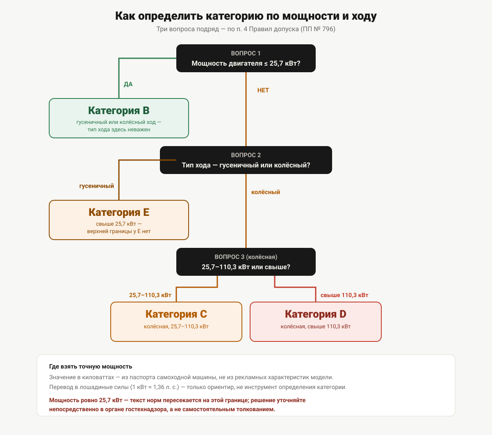

Как определить категорию под свою технику
Мощность в киловаттах, тип хода и назначение машины определяют категорию. Показываем, где взять исходные данные и как не ошибиться на границах 25,7 и 110,3 киловатта.
Купили трактор или собираетесь купить — и нужно понять, на какую категорию учиться и сдавать экзамен в гостехнадзоре, прежде чем платить за лишнее или, наоборот, обнаружить нехватку категории уже после покупки. Ответ не в марке и не в «на глаз», а в трёх конкретных параметрах, зафиксированных пунктом 4 Правил допуска к управлению самоходными машинами (постановление Правительства РФ от 12.07.1999 № 796).
Что нужно знать о машине заранее
Прежде чем открывать таблицу категорий, нужны три вещи:
- Назначение и предельная скорость — предназначена ли машина для движения по автомобильным дорогам общего пользования, и если да, ограничена ли её конструктивная скорость 50 км/ч. Это разделяет категорию A (внедорожные машины) и категории B–F.
- Тип хода — гусеничный или колёсный.
- Мощность двигателя в киловаттах — точное значение, не «на глаз» и не в лошадиных силах.
Если по первому пункту машина — внедорожное авто- или мототранспортное средство (не для дорог общего пользования либо со скоростью не выше 50 км/ч), дальше нужно разбираться в подкатегориях A I–A IV по массе, числу мест и назначению — это отдельная тема, разобранная в статье «Категории удостоверения тракториста-машиниста». Здесь разбираем более частый случай: обычный трактор или подобную самоходную машину, для которой категория определяется мощностью и ходом — категории B, C, D, E.

Вопрос 1. Мощность до 25,7 кВт?
Это первая и самая грубая развилка, и с неё стоит начинать, а не с типа хода. Если мощность двигателя не превышает 25,7 кВт — категория B, и дальше вообще неважно, гусеничная машина или колёсная: Правила допуска прямо объединяют оба типа хода в одной формулировке категории B.
Если мощность выше 25,7 кВт — тип хода становится решающим, переходите к вопросу 2.
Вопрос 2. Гусеничный ход или колёсный?
Если у машины мощностью свыше 25,7 кВт гусеничный ход — это категория E, и точка: у категории E нет верхней границы по мощности в формулировке нормы.
Если ход колёсный — мощность выше 25,7 кВт разводит машину между категориями C и D, и здесь нужен третий шаг.
Вопрос 3. Колёсная машина — 25,7–110,3 или выше?
Колёсная машина мощностью от 25,7 до 110,3 кВт — категория C. Колёсная машина мощностью свыше 110,3 кВт — категория D.
Сведём всю развилку в одну таблицу:
| Тип хода | Мощность | Категория |
|---|---|---|
| гусеничный или колёсный | до 25,7 кВт | B |
| гусеничный | свыше 25,7 кВт | E |
| колёсный | от 25,7 до 110,3 кВт | C |
| колёсный | свыше 110,3 кВт | D |
Где взять точную мощность
Мощность двигателя указывается в паспорте самоходной машины — бумажном или электронном (ЭПСМ) — и в технической документации изготовителя. Состав и структуру этих документов Правила допуска не описывают, это предмет отдельного постановления о государственной регистрации самоходных машин, и в рамках этой статьи мы его подробно не разбираем. Практический совет один: берите мощность из официального документа на конкретную машину, а не из общих характеристик модели в рекламных материалах — на одной и той же модели за годы выпуска мощность двигателя могла меняться.
Пограничный случай: ровно на границе диапазона
Формулировки категорий, если читать их буквально, соприкасаются на границе 25,7 кВт без явного разведения: категория B заканчивается словами «до 25,7 кВт», категория C начинается словами «от 25,7 до 110,3 кВт». У машины с мощностью ровно 25,7 кВт формально совпадают признаки обеих формулировок — однозначного разъяснения в тексте Правил допуска на этот счёт нет. Если у вашей машины паспортная мощность оказалась ровно на этой границе, не решайте вопрос самостоятельным толкованием — уточните категорию непосредственно в органе гостехнадзора при подаче документов.
На границе 110,3 кВт такой неопределённости нет: категория D начинается словами «свыше 110,3 кВт», то есть строго больше — значение ровно 110,3 кВт однозначно остаётся в категории C.
Второй пограничный момент — расхождение цифр внутри одного комплекта документов на машину (например, паспортная мощность и мощность по данным диагностической карты отличаются). Здесь тоже разумнее уточнять у органа гостехнадзора, а не выбирать значение самостоятельно.
Почему перевод в лошадиные силы — рискованный шаг
Мощность в характеристиках техники нередко указана в лошадиных силах, а норма считает в киловаттах. Соблазн — прикинуть: 1 кВт ≈ 1,36 л. с., значит 25,7 кВт ≈ 35 л. с., а 110,3 кВт ≈ 150 л. с. Это верный порядок цифр для грубой прикидки, но не инструмент для определения категории: коэффициент пересчёта округлён, и машина, которая по паспорту выдаёт, скажем, 34–36 л. с., может как раз попасть в зону неопределённости вокруг границы 25,7 кВт при обратном пересчёте. Категорию нужно определять по значению в киловаттах из документа на машину, а перевод в лошадиные силы использовать только для общего ориентира, не для решения.
Проверочные примеры
Ниже — пять условных примеров с округлёнными значениями мощности, а не данные конкретных моделей техники: используйте их, чтобы проверить логику разбора на своей машине, а не как справочник по маркам.
| Условный пример | Тип хода | Мощность | Категория |
|---|---|---|---|
| Компактный гусеничный мини-трактор | гусеничный | 18 кВт | B |
| Колёсный трактор небольшой мощности | колёсный | 22 кВт | B |
| Колёсный трактор среднего класса | колёсный | 60 кВт | C |
| Мощный колёсный трактор | колёсный | 130 кВт | D |
| Гусеничный трактор повышенной мощности | гусеничный | 95 кВт | E |
Когда одной категории недостаточно
Буква категории отвечает только на вопрос «какую машину можно вести». Она не отвечает на вопрос, какие работы на этой машине разрешено выполнять сверх управления, — для этого в удостоверении есть отдельная графа с записью о квалификации, и это уже тема статьи «Квалификации в удостоверении тракториста». Отдельно стоит категория F — она определяется не мощностью и ходом, а назначением техники (самоходные сельскохозяйственные машины), и под алгоритм этой статьи не подпадает.
Если машина, наоборот, настолько маломощная, что закономерно возникает вопрос, а нужна ли на неё какая-либо категория вообще, — короткий ответ и критерий разбираются в статье «Нужны ли права на мотоблок и минитрактор». Похожий вопрос про фронтальные и вилочные погрузчики — в статье «Какая категория нужна на погрузчик».